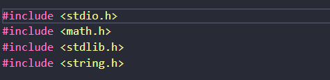

A linguagem C é uma linguagem compilada(todo o código é transformado em linguagem de máquina antes de ser "rodado") que funciona de maneira imperativa/procedural. A linguagem é baseada na linguagem BCPL e a Algol 68. Atualmente, o C possui "filhos", ou melhor, linguagens derivadas do C, como por exemplo: C++,Objective-C,swift.
Para realizarmos a soma de dois valores em C, eu fiz a inclusão de algumas bibliotecas, como mostra a imagem:
Nesse caso, como retornaremos um inteiro para o sistema operacional, então colocamos a função main() com o tipo inteiro.
Caso queira saber melhor sobre as bibliotecas temos dois links: Bibliotecas de funções-IME/usp ou Wiki com algumas informações sobre essas bibliotecas